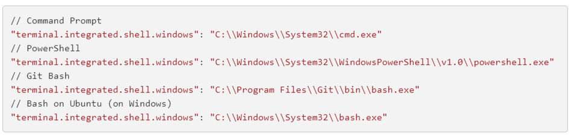

■ VScode에서 깃배쉬 쓰기
깃배쉬 페이지에 이렇게 나와있음
유저설정 Json에 그대로 복붙 해주고 저장하면 됨

요놈들은 복사용
파워쉘을 써도되고 그냥 윈도우 기본 cmd를 써도 되는데
아무래도 깃을 쓰다보면 깃 배쉬가 제일 편하다
// Command Prompt
"terminal.integrated.shell.windows": "C:\\Windows\\System32\\cmd.exe"
// PowerShell
"terminal.integrated.shell.windows": "C:\\Windows\\System32\\WindowsPowerShell\\v1.0\\powershell.exe"
// Git Bash
"terminal.integrated.shell.windows": "C:\\Program Files\\Git\\bin\\bash.exe"
// Bash on Ubuntu (on Windows)
"terminal.integrated.shell.windows": "C:\\Windows\\System32\\bash.exe"